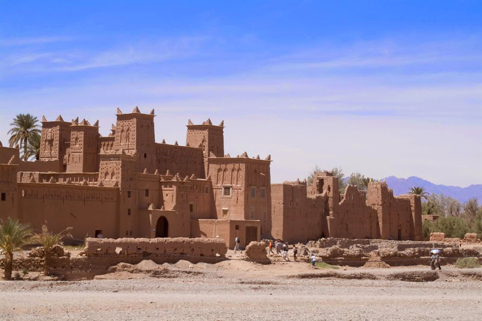

La Kasbah d’Amridil a été construite à la fin du XVIIe siècle par Mohammed Nassiri Skouri. Depuis, elle est restée une propriété familiale. Jusqu’à présent, Réda Nassiri, un des descendants du fondateur, est en charge du site et de la maison d’hôte qui le jouxte. Contacté par Yabiladi, l’homme de 31 ans se confie sur cet héritage qui fait sa fierté. Il raconte qu’au tout début, la famille vivait au sein de la Kasbah, en plus des domestiques et des gardiens. Ils se partageaient les 30 chambres du site. «Vers la fin des années 1950, les membres de ma famille qui habitaient ici sont partis et ont laissé la Kasbah en bon état. La sécheresse et la mort de Mohammed Nassiri Skouri ont fait disperser la famille», raconte Réda Nassiri. Malgré cela, une personne restait au moins pour entretenir les lieux : «Depuis 2009, je suis en charge de la Kasbah, ma famille m’a fait confiance.» Depuis 30 ans maintenant, Amridil est transformée en musée. Les visiteurs peuvent y voir des manuscrits, des monnaies d’or, des costumes traditionnels et des articles antiques. Tous les ingrédients pour s’immerger dans le passé de cette citadelle, grâce aux anecdotes du guide présent sur place. «Les membres de la famille continuaient de prendre soin de la Kasbah. Ils ont beaucoup investi pour restaurer les toits et les bases de la maison. Ni l’état, ni les associations, ni les coopératives, ni l’UNESCO, aucun organisme ne l’a pris en charge.»
